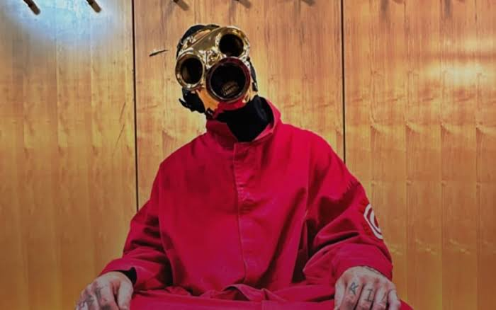
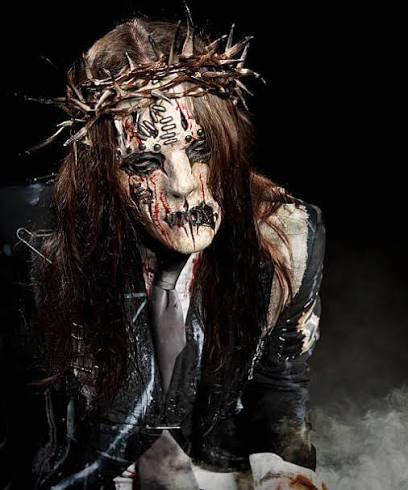
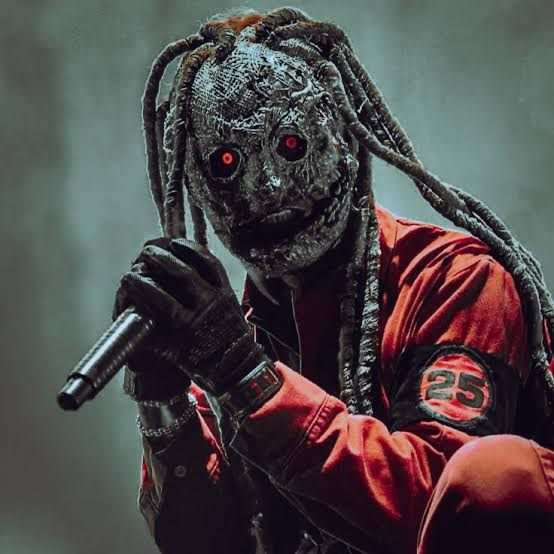
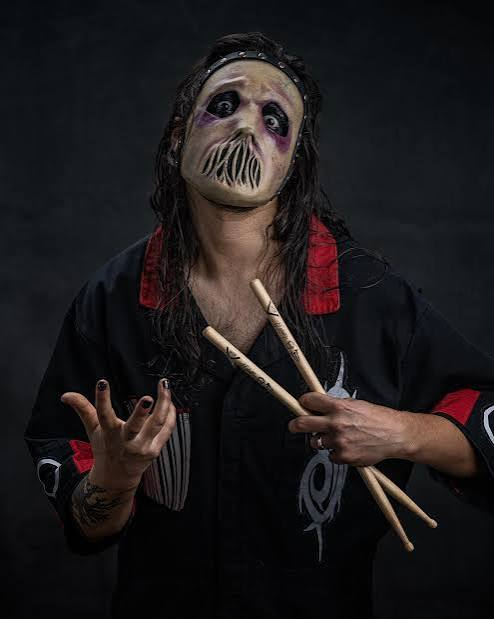
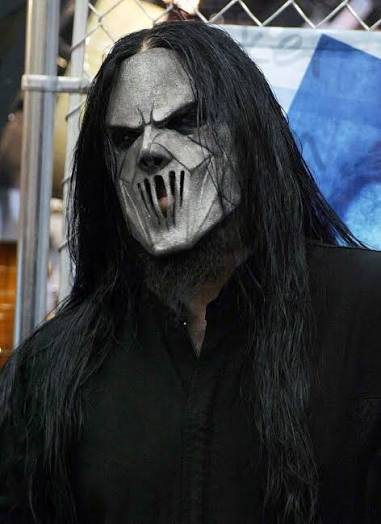
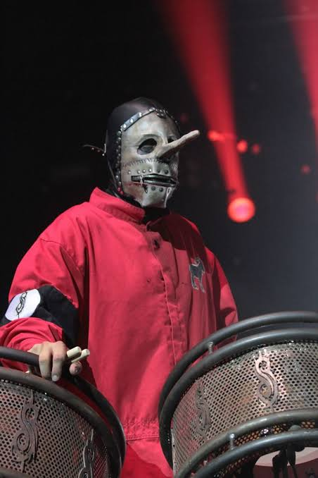

Sid Wilson é um DJ, DJ de hip-hop e músico norte-americano, amplamente reconhecido por seu trabalho como o encarregado dos turntables, samples e efeitos sonoros na banda de metal Slipknot. Conhecido por sua energia insana e acrobacias nos palcos, ele trouxe uma dimensão de música eletrônica e hip-hop que se tornou essencial para o som único do grupo.

A Energia e a Identidade de Sid Wilson
Identificado pelo número #0 no Slipknot, Sid destaca-se por utilizar máscaras no estilo de máscaras de gás e criaturas futuristas, variando a cada ciclo de álbum. Nos primeiros anos do grupo, ele ficou famoso por pular de grandes alturas no palco em direção à multidão e por interagir de forma intensa e caótica com os outros integrantes durante os shows.
Além de sua atuação no metal, Wilson mantém um projeto solo sob o nome de DJ Starscream, focado em vertentes da música eletrônica como drum and bass e dubstep. Sua habilidade técnica nas picapes e sua postura imprevisível no palco garantiram a ele um lugar de destaque na história da cultura alternativa.
Feito por Kayo
Joey Jordison
Joey Jordison (1975–2021) foi um prolífico músico estadunidense, reconhecido mundialmente por ser o cofundador e o primeiro baterista da famosa banda de heavy metal Slipknot. Além de atuar na bateria, ele foi um dos principais compositores do grupo e também participou de outros projetos musicais de sucesso, como a banda Murderdolls e o supergrupo Sinsaenum.

O Legado Musical de Joey Jordison
Considerado um dos bateristas mais rápidos e influentes da história do metal moderno, Joey destacava-se por sua incrível velocidade, precisão técnica e presença de palco marcante. Com o Slipknot, ele usava o número #1 e uma icônica máscara estilo kabuki, contribuindo ativamente para a identidade visual e sonoria dos primeiros cinco álbuns da banda.
Ao longo de sua trajetória, ele conquistou prêmios de prestígio, sendo eleito o melhor baterista dos últimos 25 anos por leitores de revistas especializadas. Sua contribuição artística inspirou uma geração de novos bateristas ao redor do mundo, consolidando seu nome como um dos grandes ícones da música pesada.
Feito por Kayo
Corey Taylor
Corey Taylor é um vocalista e compositor norte-americano, mundialmente famoso por ser o líder das bandas de rock e metal Slipknot e Stone Sour. Reconhecido por sua incrível extensão vocal, ele transita facilmente entre vocais rasgados e agressivos e melodias limpas, sendo considerado uma das vozes mais marcantes da geração do metal moderno.

A Trajetória de Corey Taylor
No Slipknot, onde utiliza o número #8, Corey tornou-se o principal rosto e porta-voz da banda, contribuindo com letras intensas e uma presença de palco eletrizante. Junto ao grupo, lançou álbuns aclamados mundialmente, conquistou prêmios como o Grammy e ajudou a transformar o coletivo de Iowa em um dos maiores fenômenos da história da música pesada.
Além do trabalho com suas bandas principais, Taylor também construiu uma sólida carreira solo, publicou diversos livros best-sellers e realizou parcerias com inúmeros artistas de destaque no meio musical. Sua versatilidade e energia inagotável mantêm seu nome constantemente em evidência como uma figura influente na cultura rock mundial.
Feito por Kayo
Jay Weinberg
Jay Weinberg é um baterista norte-americano conhecido internacionalmente por ter sido o baterista do Slipknot entre 2014 e 2023, assumindo a difícil tarefa de substituir o saudoso Joey Jordison. Vindo de uma linhagem musical de prestígio — sendo filho de Max Weinberg, lendário baterista da E Street Band de Bruce Springsteen —, Jay trouxe uma energia renovada e um estilo extremamente agressivo e preciso para o grupo.

A Trajetória de Jay Weinberg
Antes de entrar no Slipknot, Jay já havia construído experiência tocando com bandas do cenário punk e hardcore, como Against Me! e Madball. Sua entrada na banda mascarada ocorreu durante a gravação do álbum .5: The Gray Chapter, e rapidamente ele conquistou a aprovação dos fãs graças à sua dedicação extrema ao instrumento e à fidelidade aos arranjos clássicos nas apresentações ao vivo.
Após sua saída do Slipknot em 2023, o músico seguiu novos caminhos e assumiu as baquetas do lendário grupo de crossover thrash Suicidal Tendencies. Respeitado pela comunidade da bateria por seu talento impecável e pela ética de trabalho, Jay permanece como um dos nomes mais influentes da cena pesada contemporânea.
Feito por Kayo
Mick Thomson
Mick Thomson é um guitarrista estadunidense, mundialmente conhecido por ser o guitarrista principal da banda de heavy metal Slipknot, grupo ao qual se juntou em 1996. Conhecido por seu porte físico imponente e seu estilo visual marcante — caracterizado por uma icônica máscara metálica —, ele é uma das peças centrais na construção da sonoridade pesada da banda.

O Estilo e o Impacto de Mick Thomson
No Slipknot, onde é identificado pelo número #7, Mick traz uma abordagem técnica impecável focada em riffs rápidos, afinações graves e solos agressivos. Sua precisão e velocidade na guitarrada ajudaram a definir a agressividade crua que se tornou a marca registrada de álbuns históricos do grupo, como Slipknot e Iowa.
o longo de sua trajetória, ele conquistou prêmios de prestígio, sendo eleito o melhor baterista dos últimos 25 anos por leitores de revistas especializadas. Sua contribuição artística inspirou uma geração de novos bateristas ao redor do mundo, consolidando seu nome como um dos grandes ícones da música pesada.
Além do trabalho em estúdio, Thomson é amplamente respeitado na comunidade da música pesada por sua dedicação ao instrumento e pela forte presença no palco. Ele possui diversas guitarras assinadas por marcas de prestígio e continua a inspirar guitarristas de metal ao redor do mundo com seu som denso e performance consistente.
Feito por Kayo
Chris Fehn
Chris Fehn é um percussionista e vocalista de apoio norte-americano, famoso por ter sido um dos integrantes do Slipknot de 1998 a 2019. Reconhecido por trazer uma camada extra de agressividade e peso ao som da banda, ele era uma peça fundamental na dinâmica de percussão dupla ao lado de Shawn "Clown" Crahan.

O Estilo e a Presença de Chris Fehn
No Slipknot, Chris utilizava o número #3 e era instantaneamente reconhecível por sua máscara com um nariz longo estilo Pinóquio e um zíper no lugar da boca. Sua presença no palco era altamente enérgica e bem-humorada, marcada por suas interações com o público e por cantar partes dos vocais de apoio enquanto agitava a cabeça ritmicamente.
o longo de sua trajetória, ele conquistou prêmios de prestígio, sendo eleito o melhor baterista dos últimos 25 anos por leitores de revistas especializadas. Sua contribuição artística inspirou uma geração de novos bateristas ao redor do mundo, consolidando seu nome como um dos grandes ícones da música pesada.
Além da contribuição sonora nas faixas com percussões complementares, Chris participou de álbuns fundamentais da discografia do grupo, como Slipknot, Iowa e Vol. 3: (The Subliminal Verses). Após sua saída da banda em 2019, ele manteve um perfil mais reservado, mas continua lembrado com carinho pelos fãs como uma das figuras mais carismáticas da história do Slipknot.